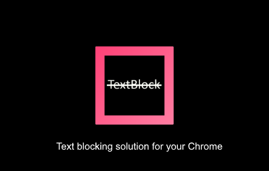

Итак, есть расширение-блокировщик рекламы, которым большинство людей пользуется каждый день. Кто-то может также отключить картинки, flash, java и что угодно ещё, но не текст. Вот почему я решил сделать это возможным, по крайней мере в Chrome. (upd: Rafaël Rozendaal и Jonas Lund сделали это ещё в 2013 году, см. обновление в конце истории)
И знаете что? Мне это даже нравится. Оказывается, текст больше не важен (ну, пока вы не доберётесь до Reddit).
Это мог бы быть арт-проект, но он вполне полезен. Мне нравится, как YouTube становится лучше без всего этого текста, и картинки с котами тоже приятные.
Я создал расширение, его исходный код: https://github.com/nettsundere/TextBlock
Скачать его из Chrome webstore: https://chrome.google.com/webstore/detail/textblock/cbjhcabimjmeokngojdenfdpiccgekmd

UPD Rafaël Rozendaal и Jonas Lund сделали похожее приложение ещё в 2013 году
Сегодня (17.04.2017) я обнаружил, что похожее расширение уже существует. Оно называется Text Free browsing, оно бесплатное, и скачать его можно здесь: https://chrome.google.com/webstore/detail/text-free-browsing/ioglfbphilinnhdmfbmfljmhemegfcdg/
Описание проекта: http://www.newrafael.com/text-free-browsing/
Единственное отличие в функциональности, которое я заметил, — TextBlock блокирует текст в динамически добавляемых iframe, а расширение Text Free browsing оставляет их как есть.
Я понятия не имел, что кто-то уже это сделал. Видимо, в следующий раз надо лучше гуглить.
Изначально опубликовано на Medium: https://medium.com/@nettsundere/a-text-is-not-that-important-b586eb0e6087